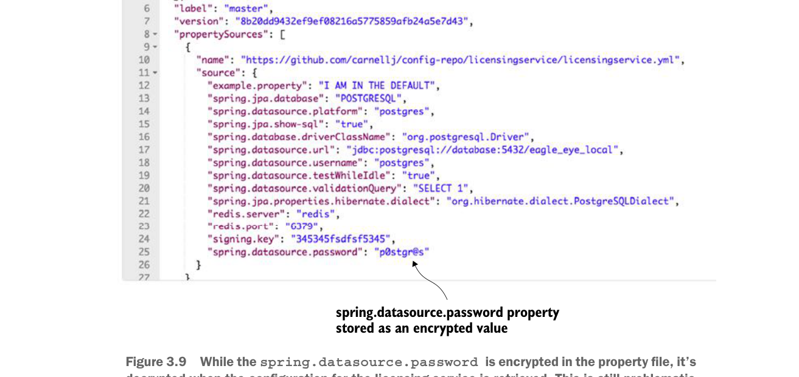

Mặc dù
spring.datasource.password được mã hóa trong tệp thuộc tính, nó được giải mã khi cấu hình cho licensing service được truy xuất. Điều này vẫn gây vấn đề.Theo mặc định, Spring Cloud Config sẽ thực hiện toàn bộ việc giải mã thuộc tính trên máy chủ và trả kết quả về cho các ứng dụng tiêu thụ thuộc tính dưới dạng văn bản thuần, chưa mã hóa. Tuy nhiên, bạn có thể yêu cầu Spring Cloud Config không giải mã trên máy chủ và giao trách nhiệm giải mã các thuộc tính đã mã hóa cho ứng dụng truy xuất dữ liệu cấu hình.
3.4.4 Cấu hình microservice để dùng mã hóa phía client
Để bật giải mã phía client cho các thuộc tính, bạn cần thực hiện ba việc:
- Cấu hình Spring Cloud Config để không giải mã thuộc tính phía máy chủ.
- Thiết lập khóa đối xứng trên licensing server.
- Thêm các JAR
spring-security-rsavào tệppom.xmlcủa licensing service.
Việc đầu tiên bạn cần làm là tắt giải mã phía máy chủ cho các thuộc tính trong Spring Cloud Config. Điều này được thực hiện bằng cách thiết lập tệp src/main/resources/application.yml của Spring Cloud Config để đặt thuộc tính spring.cloud.config.server.encrypt.enabled: false. Đó là tất cả những gì bạn phải làm trên máy chủ Spring Cloud Config.